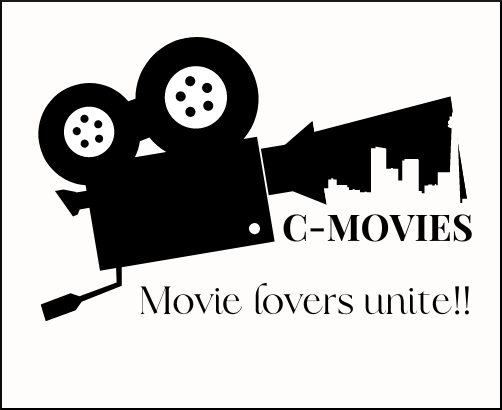

Here are a list of my past and present projects:

Created a network between frequently used words in tweets related to COVID-19
Created a mobile workout application where you can search or input new exercises, add them to your current workout along with the number of sets and repetitions completed
Working on a website that acts as a repository of all movies currently in theatre in the city of Calgary. Movie fans only need to access this one website to see not just the movies playing, but all related movie information, theatres they are playing at, and related show times.